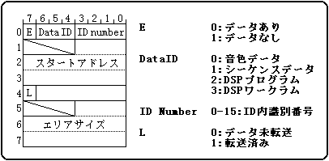

★SOUND Manual
★サウンドドライバプログラマーズガイド
★SOUND Manual
★サウンドドライバプログラマーズガイド
▲
戻る｜
進む▼
サウンドドライバプログラマーズガイド/７．システムインターフェース(ワークエリア)
サウンドエリアマップ CRNT ワーク(500H-5FFH: 256B)
| Offset | Size | Data内容 | 説明 |
|---|
| +00h | 8B | Map情報 1 |
 |
| | | | |
| +F8h | 8B | Map情報 32 | |
*現在選択されているマップ情報が格納されています。転送済みビットが立っていなければなりません。
▲
戻る｜
進む▼
★SOUND Manual
★サウンドドライバプログラマーズガイド
Copyright SEGA ENTERPRISES, LTD., 1997